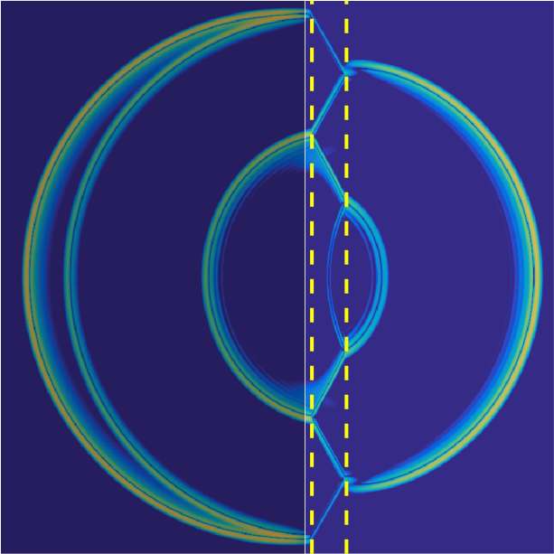
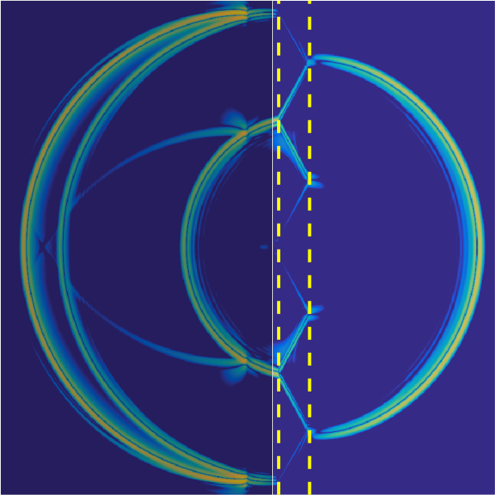

Scattering Control
| Original wave field | After scattering control |
1D example of scattering control for a medium with ten interfaces; time is on the vertical axis. Scattering control eliminates the complex multiple reflections completely automatically.
|  |  |
| Original wave field | After scattering control |
2D example of scattering control for a medium with two flat interfaces. The smaller wavefront to the right of interfaces (a multiple reflection) is removed. Click here for a movie.
In seismic and ultrasound imaging, we probe an object with waves to find out what is inside. Once inside, the propagating wave reflects and refracts whenever the medium properties change, such as at a tissue boundary or at a new rock layer. After some number of reflections or refractions, some of these waves eventually reach the surface where they can be detected. From this data we try to recover what lies within our object.
In many imaging algorithms, only the single reflection events, in which a wave has reflected only once, are desired. The remaining multiple reflections are often nuisances that confuse data interpretation; a large amount of research has been directed toward attenuating or removing their contribution to the data.
In a recent paper, coauthors Vitaly Katsnelson, Maarten de Hoop, Gunther Uhlmann and I developed and rigorously analyzed a scattering control series which allows us to cancel multiple scattering without knowing what lies within the object. The method, which is inspired by work by Rose[1] in 1D and the Marchenko equation, as well as recent work on Marchenko imaging by Wapenaar and collaborators[2], is detailed in our preprint.
Our method translates directly into a practical numerical algorithm, which I implemented in object-oriented MATLAB and C++. You can see examples of it in action to the right in 1D and 2D, or in this movie. In the 2D examples, a Krylov method (MINRES) is used to accelerate convergence.
[1] James H. Rose, "Single-sided autofocusing of sound in layered materials." Inverse Problems 18 (2002).
[2] Kees Wapenaar et al., "Marchenko imaging." Geophysics 79 (2014).